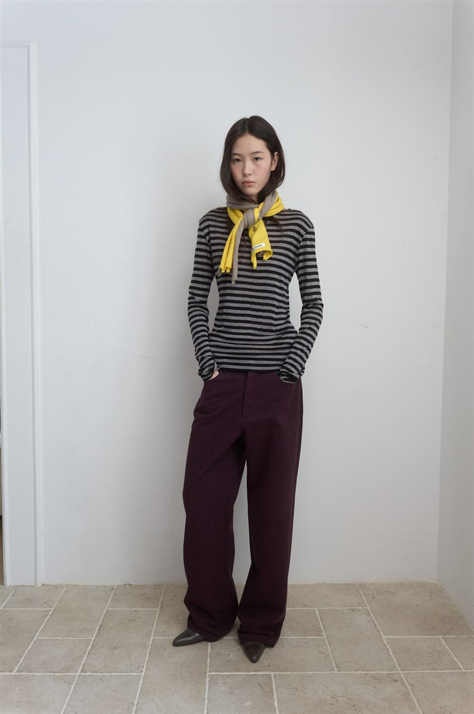
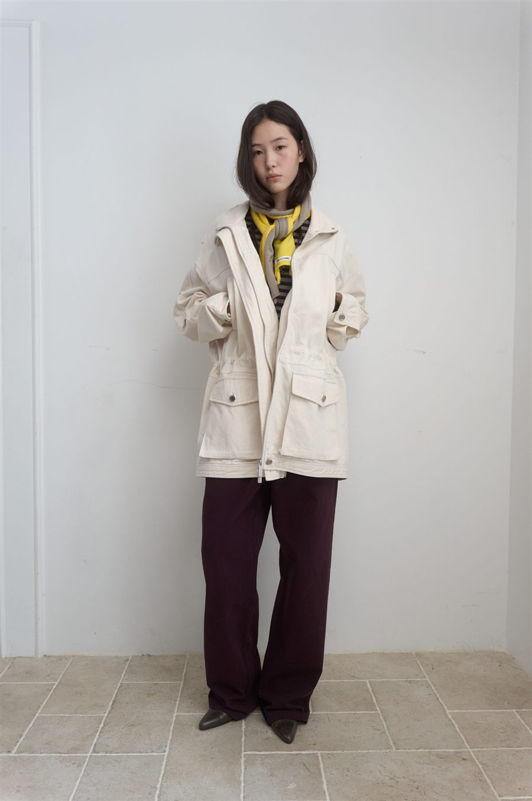
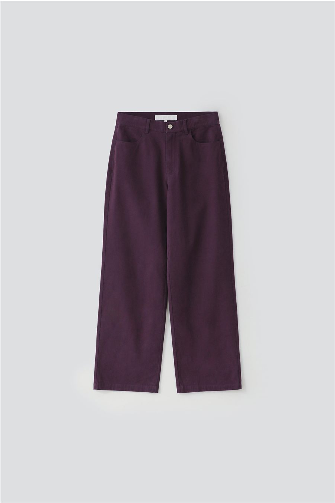

사계절 캐주얼 · 29CM · 2026.11.10 판매가
사계절 캐주얼, 톤다운 퍼플 코튼 팬츠부터
계절 상관없이 데일리로 돌려 입는 캐주얼 아이템을 모아 두는 페이지예요. 첫 아이템은 마조네 스트레이트 코튼 팬츠예요. 워시드 가공한 톤다운 퍼플이라 무채색 대신 쓰기 좋다는 후기가 있어요.




마조네 상품 사진 · 스트라이프 니트 / 옐로 스카프 / 아이보리 재킷 / 제품 앞면
마조네 MA JOURNÉE
STRAIGHT COTTON PANTS_PURPLE
면 100%스트레이트 핏S·M후기 3개 · 찜 4792026년 9월 제조
정가112,000원
판매가28%80,640원
쿠폰 적용가35%72,580원
무신사 삼성카드 결제 시42,580원
| 치수(cm) | S | M |
|---|---|---|
| 총장 | 103 | 104 |
| 허리단면 | 35 | 37.5 |
| 엉덩이단면 | 49 | 51.5 |
| 허벅지단면 | 31 | 33 |
| 밑위 | 28 | 29 |
| 밑단단면 | 24 | 25 |
S 추천. 허리 35cm는 잘 맞는 무탠 플레어 25(35.25cm)와 거의 같아요. 인심(총장−밑위)은 75cm로, 플레어(77cm)보다 2cm 짧고 시야쥬 바지(72cm)보다 3cm 길어요. 플랫 슈즈보다는 굽 있는 신발이 안전해요.
29CM에서 보기 ↗후기와 체크 포인트
후기 (3개)
- 159cm·56kg S "사이즈 잘 맞고 소재가 부들부들 매끈"
- 156cm·54kg M "워시드 컬러와 소재가 좋고, 톤다운 퍼플이라 무채색 대신 쓰기 좋다"
- 질감이 따뜻해서 한겨울에도 내복과 함께 가능하다는 평
봄웜톤 컬러 팁
- 퍼플은 원래 쿨톤 색이에요. 이 제품은 붉은 기가 도는 톤다운 플럼이라 얼굴에서 먼 하의로 입으면 부담이 적어요
- 얼굴 가까이엔 크림·버터·카멜 같은 따뜻한 색을 두세요
- 모델처럼 옐로 스카프를 더하면 웜톤 포인트가 돼요
소재·관리
- 면 100% 탄탄한 조직감, 드라이클리닝 권장
- 사계절 데일리. 한여름엔 다소 더울 수 있어요
- 후기가 아직 3개뿐이라 핏 정보가 적어요
사계절 코디 공식
가격은 2026.11.10 29CM 기준이에요(쿠폰은 계정마다 다를 수 있어요). 재고는 상품 페이지에서 다시 확인해 주세요.